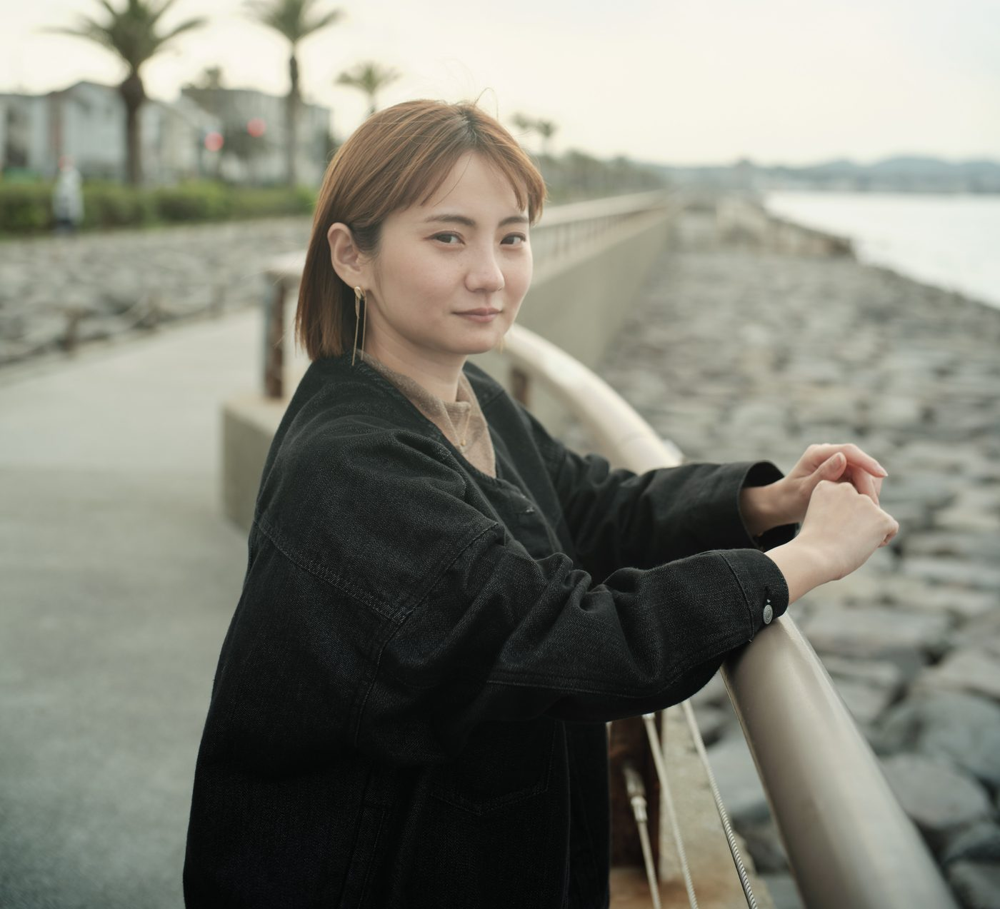
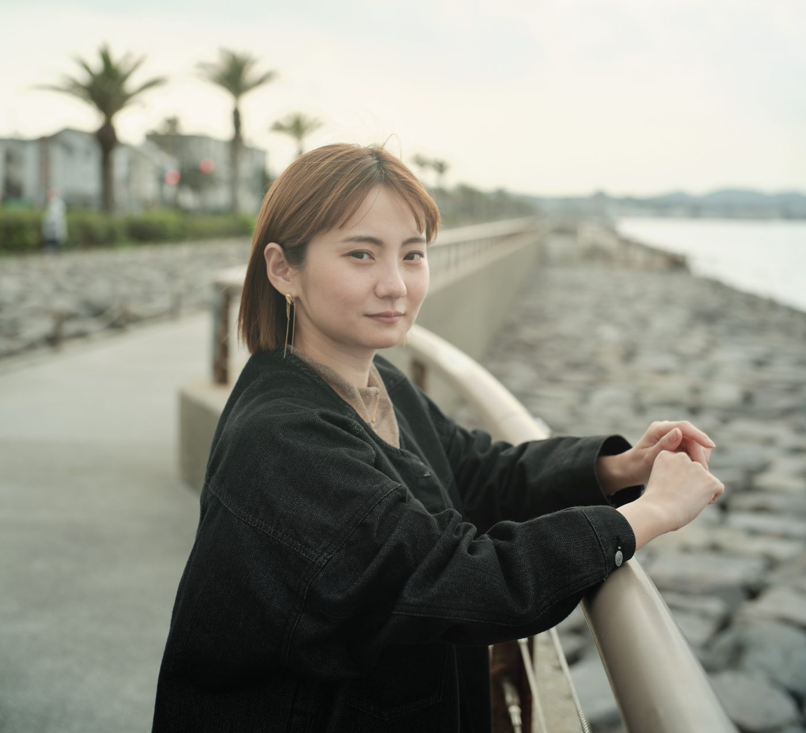

走ってきた数年を、いちど言い直す
20代後半の
働く意義・生きる意味を見つけにいく90分
同じ温度で話せる相手がいなかった話を、自分のことばにしていく90分。
書いて、話して、また書く。

30代は B案（3520×3200）で確定し、4本とも公開済みです。このページは20代後半の3案です。
比率は3案とも 1.10（4334×3940）で固定。30代で確定した B案（3520×3200）と同じ比率です。横幅は元画像いっぱいで、これ以上は写っていません。変えているのは切り出す縦の位置だけで、上に取る空の量が変わります。
※ 3:2 のままだと横幅がすでに上限なので、引きしろがありません。引くには比率を変えるしかなく、30代と同じ 1.10 に揃えました。
頭上の余白＝彼女の頭のうえに取る空の量。増やすほど彼女は小さく、引いて見えます。
同じ温度で話せる相手がいなかった話を、自分のことばにしていく90分。

同じ温度で話せる相手がいなかった話を、自分のことばにしていく90分。

同じ温度で話せる相手がいなかった話を、自分のことばにしていく90分。
決まったら、20代の回に入れて公開します。あわせて見出しの3行化と、写真の列を42%にする変更も入ります。